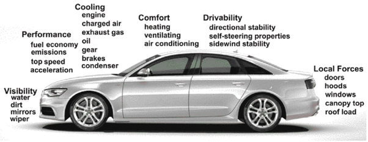
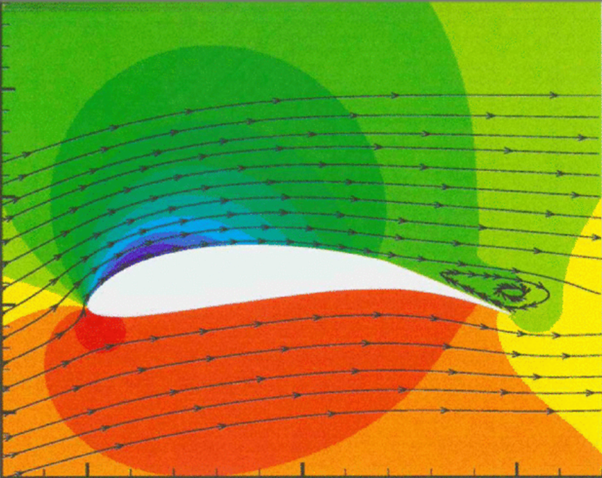
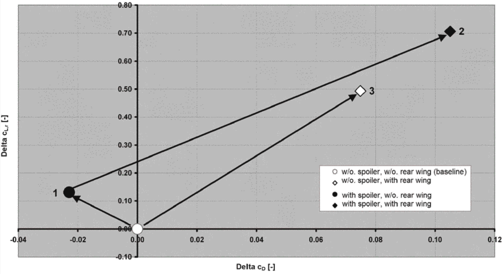
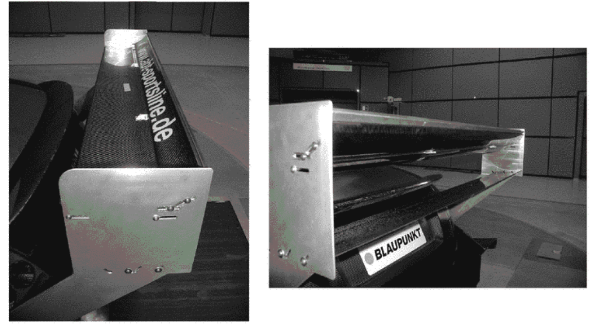

A vehicle’s aerodynamic properties play a critical role in its usability and how it performs in a multifaceted way. Aerodynamic optimisation (AO) ensures that manufacturers
can employ modern proven solutions so that the next generation of automobiles can attain greater speeds, have a better fuel economy, are more stable at high speeds, have a minimized
noise emission as well as better thermal performance. Wind tunnel testing (WTT) and Computational fluid dynamics (CFD) are the primary methods used by aerodynamicists to gauge
an understanding as to how a certain car shape will behave in the presence of a fluid and the different airflow effects that the chassis may be subject to. CFD allows for engineers to
continuously iterate and make micro-adjustments on a design and quickly and effectively, see the consequences of that alteration with regards to any changes in how the model
behaves in the simulated fluid. Wind tunnels provide highly accurate data which verifies CFD results and gives engineers further insights as how a physical car model can perform in the
real world all the while having a controlled environment where factor such as yaw angle and wind speed can be closely adjusted and monitored.
Part IA: Introduction
Automotive Aerodynamics (AA) is the study of the aerodynamics of road vehicles, the vehicles that are going to be of primary focus in this paper are performance automobiles. There are several reasons as to why this
study is of particular importance the first of which pertains to resale value, market trends and environmental sustainability. In particular the upcoming EU regulations part of
‘fit for 55’ package. “The regulation aims to increase carbon dioxide (CO2) emission reductions targets for new cars and vans, so as to ensure that the automotive sector contributes
to the EU’s climate goals, and to stimulate innovation” (EU Web, r1). How this relates directly to AO is that such regulatory measures stimulates automakers to aerodynamically optimize
their light-duty and heavy-duty vehicles alike for better fuel economy (FE) and reduced emissions; now put yourself in the perspective of the consumer if you were to opt for a more
aerodynamically efficient vehicle with a better fuel efficiency that complies with the regulations it would mean that in future when you wish to sell that vehicle it would potentially
go for higher prices as it is more aligned with the market trend (by having a better fuel efficiency), in other words your investment is more futureproof. AO specifically WTT plays an
instrumental role in certain practical aspects of aerodynamic development such as vehicle safety and stability (Aerodynamics of road vehicles 5th. Ed, C5.1 page number 414 r2) as well as
general vehicle performance and fuel economy (Aerodynamics of road vehicles 5th. Ed, C5.1 page number 1 r3).
Part IB: Groundworks and Methods
Aerodynamics play a holistic role in a car’s performance from engine cooling inlets to wings that generate downforce. Automotive engineers are pressed to design a solution that takes all
factors of a car’s requirements into count; (in the context of airflow optimization) creating chassis designs that has good thermal performance and lower drag (better aerodynamic efficiency)
as well as many of the “spectrum of tasks” (Huncho, r5 c1) outlined below.

(Huncho c1 r6)
The aerodynamic solutions and devices that will be explored in this paper fall into the following categories of flow processes; the airflow around a moving vehicle (1) and the airflow through the
body of the moving vehicle (2) (Huncho, r7 c1). The foundational forces in aerodynamics are drag and down force.
“Drag is a mechanical force” (NASA Web, r8) that is generated when a solid body is in contact with a fluid and there is relative motion between the fluid and the solid body
(due to their difference in velocities) (NASA Web, r9). It is a vector quantity with both magnitude and direction, and it opposes the motion of the vehicle (in this instance an automobile)
through a fluid (in this instance air).
High performance automobiles have exceptionally low drag for the most efficient motion possible, although legal criteria and regulations can prevent certain measures being taken by the engineers to
maximise aerodynamic gains (by altering the vehicles design/ chassis for a lower drag coefficient, Cd) (Huncho c9.6.1, r10). We will be evaluating some of the most utilised automobile devices/ design
solutions that engineers use for the automobile to attain the lowest possible Cd in Part IIA.
Where:
Rho = density of fluid V = velocity of object travelling through the fluid
A = reference area Cd = coefficient of drag
Magnitude of the drag force is proportional to the square of velocity.
Downforce is the vertical component of the aerodynamic forces acting on the car. As the car travels through the air, the downforce will push the car down into the ground.” (Mercedes AMG F1, web r11) Downforce
is the vertical component of the aerodynamics which acts on a car and is denoted by the coefficient of lift Cl (as it is a downwards lift force). The reason why automobiles (Particularly in track focused disciplines like F1)
are designed heavily around the generation of downforce can be explained by its effect to drastically alter driving characteristics; essentially increasing the grip and stability of a car when cornering at high speeds.
Downforce is instrumental for a vehicle to have a high cornering speed/ maximum lateral acceleration (Huncho, r12).
Where:
Rho = density of fluid V = velocity of object travelling through the fluid
A = reference area Cl = coefficient of lift
negative sign for the value of the coefficient of lift indicates the directionality of the force as downwards (downforce).
Part IIA: Aerodynamic Devices and Effects
AA Optimization case study 1: wings
Wings are an aerodynamic device that generates significant downforce and are used to maximise the lateral acceleration and cornering stability of a vehicle (by generating downforce).

The figure shows the pressure distribution in a wing profile and how downforce is generated by a wing, the streamlines/velocity vectors are more concentrated at the top than the
bottom meaning that the airflow at the top surface of the wing is faster than the air at the under surface (where streamline separation is greater). This creates under pressure
on the top surface and overpressure in the bottom/under surface. (Huncho r14 p669) The difference between these two pressures results in a net force which is the downforce (Cl inverted).
AA Optimization case study 2: Spoiler
“Spoilers are mouldings on the body or on the underbody that serve to deflect the flow of air toward or away from a defined location.” (Huncho, r15 p677) The primary purpose of a spoiler is to reduce drag.
 
{Shows the influence of rear spoiler and rear wing on rear axle lift and drag in an Audi TT- R DTM racing car in 2001. Change in lift, Y-axis (Cl) and change in drag, x-axis (Cd)}
The section of the data we ought to focus on is the data point number 1 detailing the drag changes (x-axis translation to the left) in comparison to the base model of the Audi TT vehicle. The addition of
the spoiler in this instance results in the vehicle becoming marginally more aerodynamic (due to the drag coefficient decreasing (by approximately 0.02), the magnitude of the drag force will decrease as a result). There are many
reasons as to why this result may occur but one way in which spoilers can reduce drag is the redistribution of airflow upwards (allowing the air to follow a smoother path over the back of the car). So, the
spoiler increases the longitudinal component of the airflow (streamlining it) and reduces the lateral distribution of airflow (e.g vortices and wakes that are major contributors to aerodynamic drag on the
vehicle) (T. Obidi p196, r17)
References
‘EU’ Part IA r1:
https://www.consilium.europa.eu/en/infographics/fit-for-55-emissions-cars-and-vans/#:~:text=This%20means%20that%20all%20new,compared%20to%20the%202021%20targets
‘NASA’ Part IB r:
https://www1.grc.nasa.gov/beginners-guide-to-aeronautics/what-is-drag/#:~:text=Drag%20is%20the%20aerodynamic%20force,airplane%20(even%20the%20engines!).
‘Mercedes F1’
https://www.mercedesamgf1.com/news/feature-downforce-in-formula-one-explained

.svg) Where:
Rho = density of fluid V = velocity of object travelling through the fluid
A = reference area Cd = coefficient of drag
Magnitude of the drag force is proportional to the square of velocity.
Downforce is the vertical component of the aerodynamic forces acting on the car. As the car travels through the air, the downforce will push the car down into the ground.” (Mercedes AMG F1, web r11) Downforce
is the vertical component of the aerodynamics which acts on a car and is denoted by the coefficient of lift Cl (as it is a downwards lift force). The reason why automobiles (Particularly in track focused disciplines like F1)
are designed heavily around the generation of downforce can be explained by its effect to drastically alter driving characteristics; essentially increasing the grip and stability of a car when cornering at high speeds.
Downforce is instrumental for a vehicle to have a high cornering speed/ maximum lateral acceleration (Huncho, r12).
Where:
Rho = density of fluid V = velocity of object travelling through the fluid
A = reference area Cl = coefficient of lift
negative sign for the value of the coefficient of lift indicates the directionality of the force as downwards (downforce).
Where:
Rho = density of fluid V = velocity of object travelling through the fluid
A = reference area Cd = coefficient of drag
Magnitude of the drag force is proportional to the square of velocity.
Downforce is the vertical component of the aerodynamic forces acting on the car. As the car travels through the air, the downforce will push the car down into the ground.” (Mercedes AMG F1, web r11) Downforce
is the vertical component of the aerodynamics which acts on a car and is denoted by the coefficient of lift Cl (as it is a downwards lift force). The reason why automobiles (Particularly in track focused disciplines like F1)
are designed heavily around the generation of downforce can be explained by its effect to drastically alter driving characteristics; essentially increasing the grip and stability of a car when cornering at high speeds.
Downforce is instrumental for a vehicle to have a high cornering speed/ maximum lateral acceleration (Huncho, r12).
Where:
Rho = density of fluid V = velocity of object travelling through the fluid
A = reference area Cl = coefficient of lift
negative sign for the value of the coefficient of lift indicates the directionality of the force as downwards (downforce).